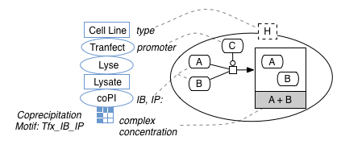

Here we describe the annotation process + annotations for IE extraction frames based on co-precipitation experiments.

Based on separating interpretive and observational frames for knowledge derived from a given experimental type, we present (A) an IE frame for data expressed in the paper as experimental knowledge (which might refer to the major parts of the experimental procedure, the context for measurements or measurements themselves) and (B) an IE frame for data expressed as an interpretation (or implication).
In this case, data is expressed as experimental data from coprecipitation experiments (i.e., experiments in which a coprecipitation step gave rise to measurements of the concentration of complexes)
At this stage, we use a flat annotation structure where multiple slots can be populated from a single sentence, in order to attempt to construct three things from the text (A) features that permit us to classify the experiment according to it’s type and subtype (i.e., a coprecipitation experiment specialization), (B) contextual values of independent variables that anchor a given measurement and (C) the measurement value itself.
{
cell-type
transfection-molecule
mutation-molecule
incubation-reagent
ip-molecule
assay-molecule
coreference-target
m-obj
m-val
m-comp
}
We found a great many more annotations of this type because the focus of these relatively simple experiments in the narrative of a given paper is whether two (or more) molecules bind together to form a complex.
{
binds-strength # how strong is the binding between the constituents
binds-catalysis # how does the catalysis work (inhibits, activates, etc.)
binds-constituent1 # molecules binding together
binds-constituent2
binds-constituent3
binds-controller # molecule acting as a catalyst
binds-complex # molecule formed as a complex
binds-site # site on constituent molecule's DNA where an event happens. This may or may not be binding related.
}
This data comprises brat files from 18 articles, containing information from 103 experimental passages / figure descriptions. We also include brat configuration files (annotation.conf, kb_shortcuts.conf and visual.conf) that determine and assist how these annotations are used within the brat annotation tool.